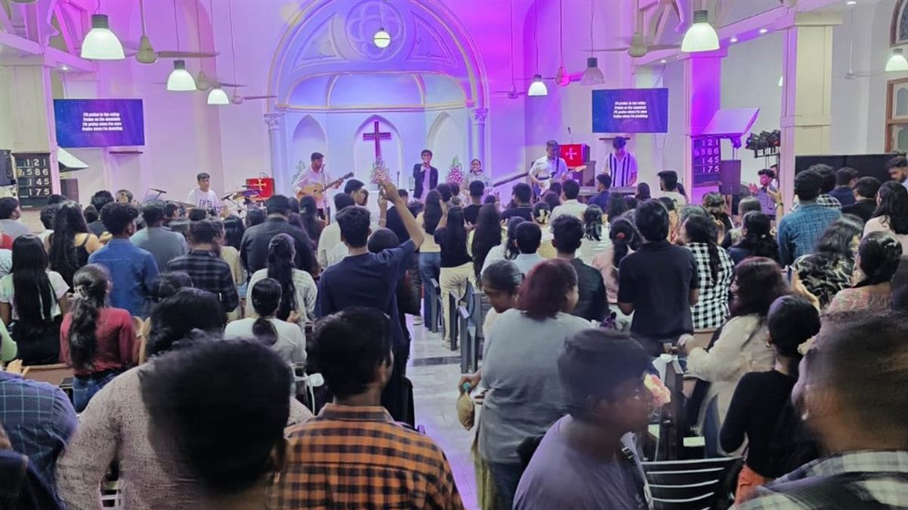
Shepherding the Mumbai Regional Conference with faith and vision — from Thoburn to the present day.

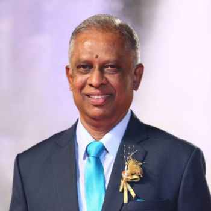
Shepherd of the historic South Bombay congregations including Taylor Memorial and Bowen Memorial.
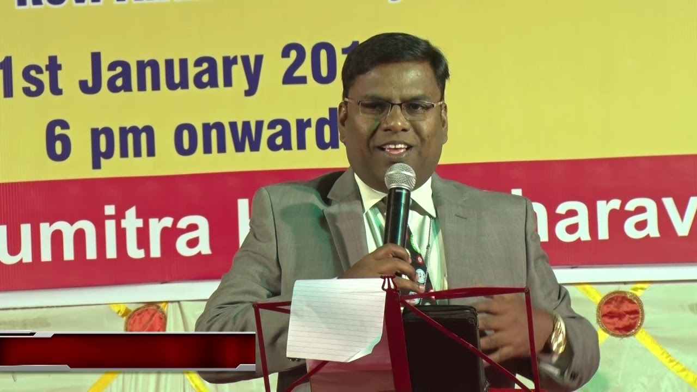
Serving the northern suburb congregations across Andheri, Goregaon, Kurla, and Mira Road.
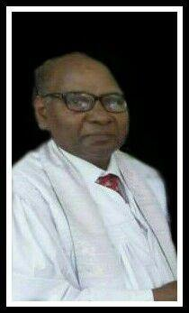
Overseeing the Methodist congregations of Pune, Pimpri-Chinchwad, Lonavala, and Talegaon.
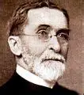
First Missionary Bishop for the Methodist Episcopal Church in India. Led the initial missionary expansion and established congregations across Bombay.
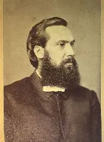
Elected for India, Bishop Parker served the growing Methodist work including the Bombay Conference.
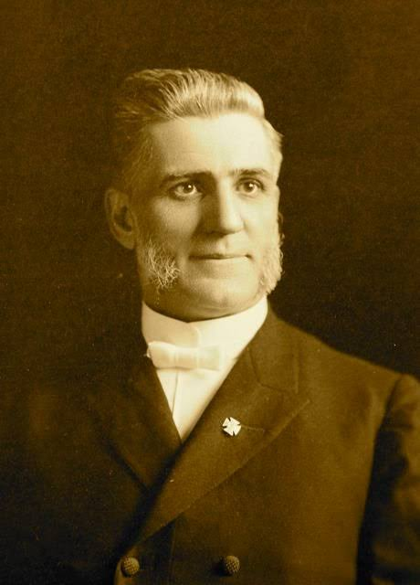
The namesake of Warner Memorial Methodist Church in Kurla, elected for India in 1900–1904.
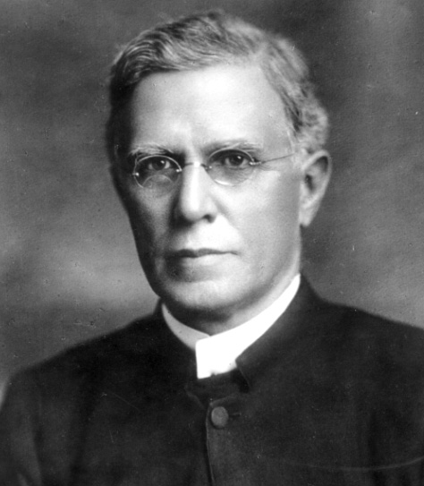
Pioneer of mission work in Singapore and Malaysia. Namesake of Oldham Memorial churches in Pune.
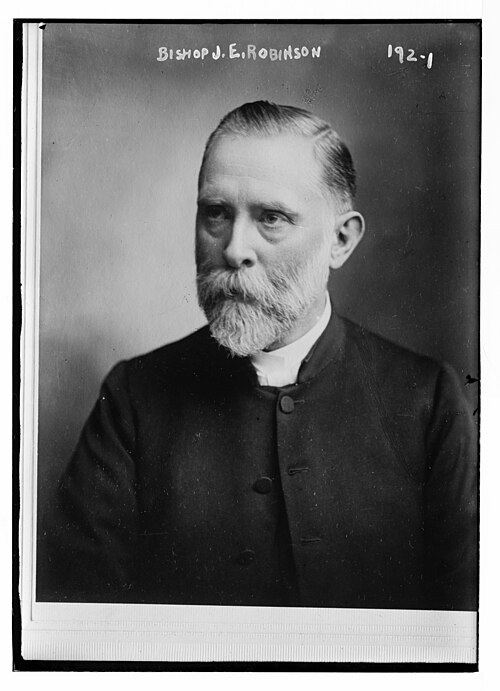
Namesake of Robinson Memorial Methodist Central Church in Madanpura, Mumbai.
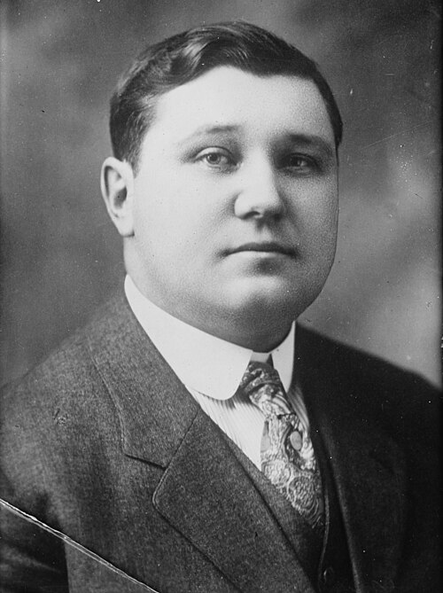
Served during the period of the Methodist Missionary Society's organization.
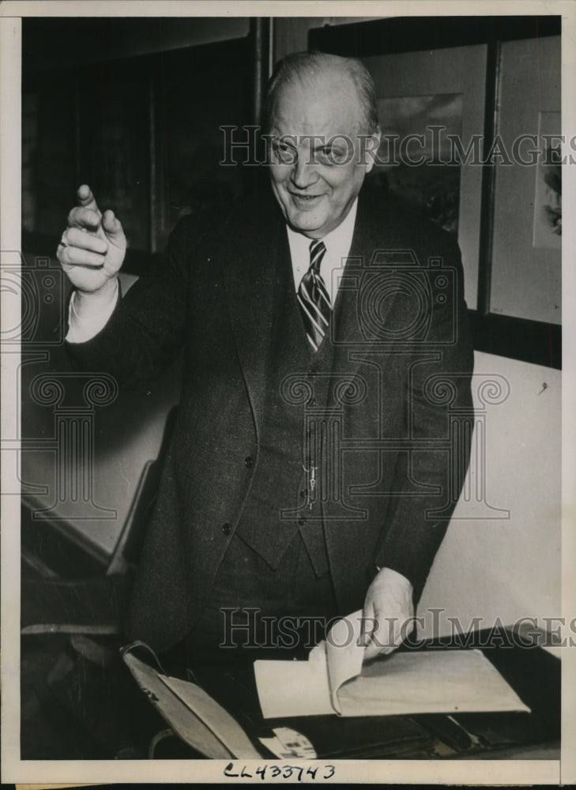
Elected to the episcopacy in 1920, serving the expanding Southern Asia field.
Elected 1924, retired from the Episcopacy in 1945 after 20 years of Episcopal service.
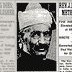
First national Indian Bishop of Southern Asia Methodism — a milestone in indigenous leadership.
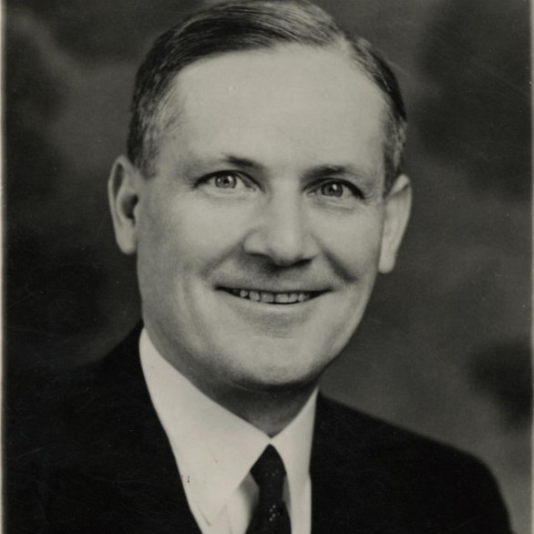
Elected in 1935 after wide experience in mass movement work in Southern Asia.
Elected in 1968 Central Conference. Became a bishop of MCI at the 1981 reorganization.
Supervised the Bombay Episcopal Area; began the Goa Mission in 1968. Reactivated to supervise Bombay Episcopal Area after Bishop Joshi's passing.
Elected in 1972 Central Conference after Bishop Shaw retired.
Elected on 5 January 1979 to supervise the Bombay Episcopal Area after Bishop R. D. Joshi's passing.
One of the four active bishops who chose to become bishops of the autonomous MCI. Supervised the Bombay Episcopal Area post-autonomy.
Elected as one of the two additional bishops at the first MCI General Conference (1981). Supervised Bombay Episcopal Area in the late 1980s.
Elected as the third bishop of the MCI at the Adjourned Session in 1985. Served the Bombay Area in the early-to-mid 1990s.
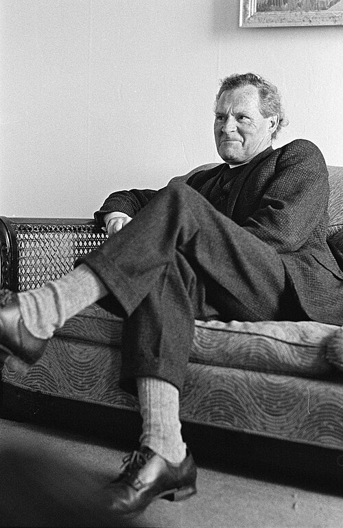
Served as bishop of the Bombay/Mumbai Episcopal Area from 1994–1999.
Led during the Hutchings Talegaon project partnership with Good People International, Korea (2002 groundbreaking).
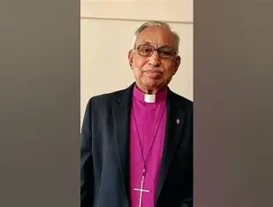
Served the Mumbai/Bombay Episcopal Area from 2005–2007.
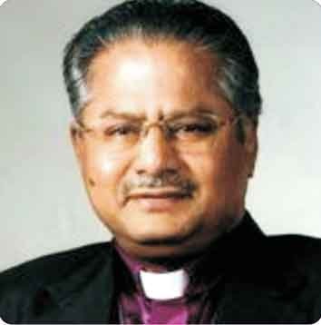
Served in 2007 bridging the transition in the Mumbai area.
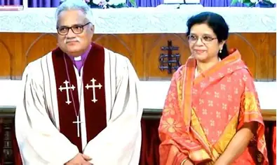
Served as bishop of the Mumbai Episcopal Area from 2007–2014. Inaugurated Hutchings School Talegaon (2009). Recognized Wray Memorial as a Pastorate Conference (2008).
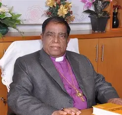
Served the Mumbai area from 2014–2016.
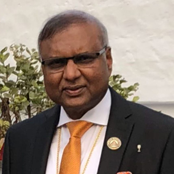
Served as Episcopal Bishop and Resident Bishop of MRC from 2016. Appointed for Bombay and Gujarat Regional Conferences following an episcopal reshuffle in 2025.
Current Episcopal and Resident Bishop of the Mumbai Regional Conference — MRC-MCI. Chairman of Hutchings School Talegaon. Leads MRC during the 38th session.
| Period | Bishop | Notes |
|---|---|---|
| 1888 | Bishop James M. Thoburn | First Missionary Bishop in India |
| 1896-1904 | Bishop Edwin W. Parker | Elected for India |
| 1900-1904 | Bishop Frank W. Warne | Namesake of Warner Memorial, Kurla |
| 1904 | Bishop William F. Oldham | Namesake of Oldham Memorial, Pune |
| 1904 | Bishop John E. Robinson | Namesake of Robinson Memorial, Mumbai |
| 1924-1945 | Bishop Brenton T. Badley | 20 years of Episcopal service |
| 1930-1935 | Bishop Jaswant Rao Chitambar | First Indian national Bishop |
| 1976-1979 | Bishop Alfred J. Shaw | Reactivated to supervise Bombay Episcopal Area |
| 1979-1981 | Bishop Shantanu Kumar Parmar | Elected 5 January 1979 for Bombay Episcopal Area |
| 1981-1987 | Bishop Eric A. Mitchell | Chose to become MCI bishop at autonomy |
| 1987-1990 | Bishop Elliot D. Clive | Elected at first MCI General Conference |
| 1990-1994 | Bishop Stanley E. Downes | Third bishop elected by MCI (1985) |
| 1994-1999 | Bishop Dr. S. R. Thomas | Hutchings leadership period |
| 1999-2005 | Bishop Dr. D. K. Agarwal | Hutchings Talegaon groundbreaking (2002) |
| 2005-2007 | Bishop S. V. Sampath Kumar | Served Mumbai Episcopal Area |
| 2007 | Bishop Dr. Taranath Sagar | Transitional leadership |
| 2007-2014 | Bishop Dr. Elia Pradeep Samuel | Inaugurated Hutchings Talegaon (2009) |
| 2014-2016 | Bishop N. L. Karkare | Served Mumbai area |
| 2016-2025 | Bishop Dr. Anilkumar John Servand | Episcopal/Resident Bishop of MRC |
| 2026-present | Bishop Dr. Newton M. Parmar | Current Episcopal & Resident Bishop, MRC-MCI |
Youth aged 14–25 building Christian leaders through worship, service, and community across MRC.
Women in mission — supporting education, healthcare, and compassionate service since the 19th century.
Men's fellowship and service — supporting the church through prayer, mentorship, and community work.
Children's Christian education — nurturing faith in 60,000+ children across the region each year.
Whether you are a young person in MYF, a woman in WSCS, a man in Methodist Men, or a Sunday School teacher — there is a place for your gifts.